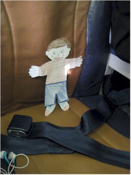
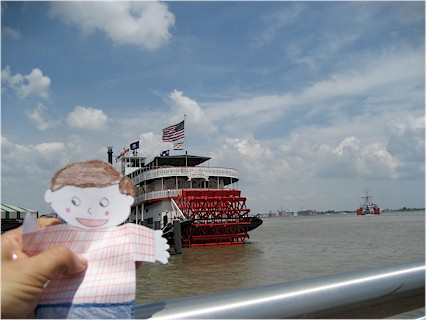
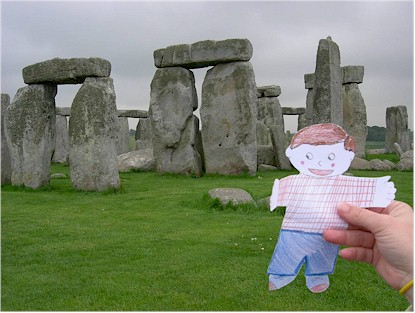
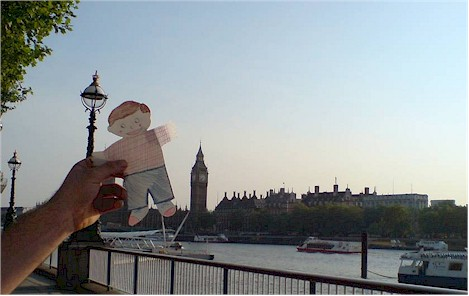
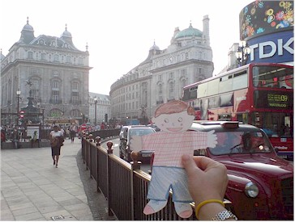
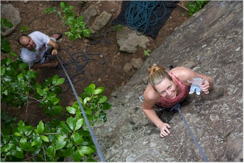
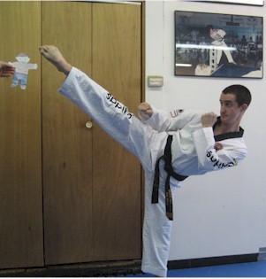

Our little niece Kaitlyn Casazza from Columbia
Falls, Montana included us in a school project she did called, "Flat
Stanley." It is based on a book in which a boy gets squished
flat and makes the most of it by seeing the world via being mailed from
place to place. The teacher asks that you take pictures of Stanley
in various locations and send the pictures back to the classroom to help
the children learn geography. We had a great time showing Stanley
the sights, and several of our friends got in on the action as
well.
|
|
Flat Stanley arrived at our house in Oklahoma just as I was leaving
for a trip to New Orleans, so I took him along.
|
 |
 |
| Here he is on a Southwest Airlines flight |
And with a steam boat on the Mississippi in New Orleans |
|
I met my friend Amy Jones in New Orleans. Amy now lives in
London and kindly offered to take Stanley home with her for some
sight-seeing.
Stanley had a great time seeing the sights in the U.K. with Amy &
Julio.
|
 |
 |
| Here Amy takes Flat Stanley to see the famous Stonehenge |
Here he is in front of the Thames river, Big Ben, and Parliament |
| |
|
 |
 |
Now he's at Piccadilly Circus, probably going to get a curry
|
Amy returned him to us just as we were leaving for a trip to
Arkansas. Here Flat Stanley joins a thrilled Eric for some rock
climbing. |
| |
|
 |
 |
Flat Stanley (with help from Cassy Gruenther) red-pointing a route
at Horseshoe Canyon Ranch near Jasper, Arkansas |
Back home in Edmond, Oklahoma, Flat Stanley attended
Tae Kwon Do class at Dragon Kim's with Eric. In this picture
we see Eric Harris in a tough match against Flat Stanley. |
| |
|
| Although the project is officially over, Flat Stanley has
gone to the Bahamas with other friends now. You just can't hold that guy
in one spot for long!
|
| |
|
| |
Back to Top |